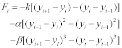
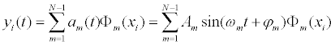
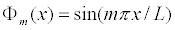
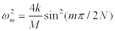

Let yi= y(xi,t) represent the displacement of a particle with horizontal position xi along a one-dimensional crystal lattice. Because it is assumed that the particles do not move in the x-direction, we need only consider forces in the vertical direction. The force Fi on the i-th particle depends on the relative vertical displacement between that particle and its nearest neighbors and can be written as
 .
where k is the Hook's law constant and the nonlinear quadratic and cubic parameters are α and β, respectively. Because the first and last particles in the lattice are fixed, we compute particle accelerations starting with the second particle and continuing through the lattice until we reach the next-to-last particle.
One way of understanding a lattice of N coupled oscillators of length L and mass M is to express the displacement of the i-th oscillator yi(t) at location xi as a sum of harmonic functions with angular frequency ωm and phase angle ϕm

where the amplitudes {Am : m=1 ...N-1} are constant if the nonlinear parameters are zero and slowly varying functions of time if these parameters are not too large. The spacial dependence is expressed in terms of the mode (eigen-) functions Φm . The m-th mode Φm is
 .
The N-1 amplitude coefficients {Am : m=1 ...N-1} and phase angles {ϕm : m =1 ...N-1} can be chosen to produce an arbitrary initial configuration as shown in the Ejs Coupled Oscillator model.

The system stays in a single mode and every particle on the lattice oscillates with constant angular frequency ωm if the lattice is initialized in a single mode and the nonlinear parameters α and β are set equal to zero. The lattice will not stay in a single mode if α and β are not zero. The FPU model initializes the system into a single-mode state by setting all but one amplitude to zero and the simulation plots the time evolution of the first six modes when the play button is pressed.